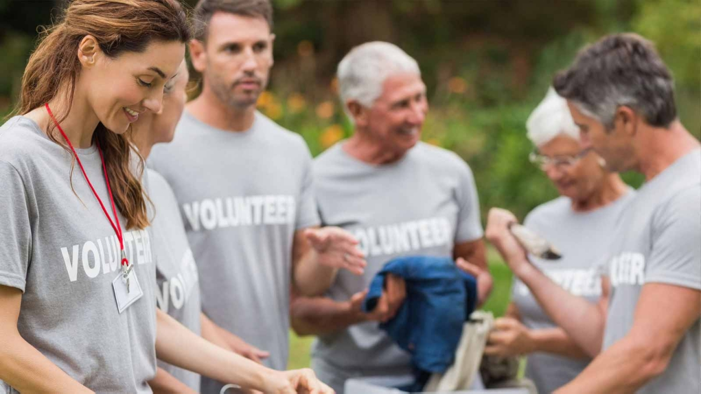

Get Involved
At HeartfeltGiving, we believe that everyone has the power to make a difference. There are many ways you can get involved and help us in our mission to change lives through compassionate action.
How to Get Involved
-
Sign Up
Complete our online registration form to express your interest in volunteering with HeartfeltGiving. Provide us with your contact details, availability, and any specific skills or areas of interest.
-
Attend an Orientation Session
Join one of our orientation sessions to learn more about our organization, our projects, and how you can contribute. This session is an opportunity to ask questions and meet other volunteers.
-
Get Matched with a Project
Based on your skills and interests, we will match you with a project that suits you. Whether you want to help serve meals, teach, or participate in environmental initiatives, we have a place for you.
-
Start Volunteering
Begin your volunteering journey with HeartfeltGiving. We provide all the necessary training and support to ensure you have a meaningful and rewarding experience.
Join Our Community
Benefits of Volunteering
Volunteering with HeartfeltGiving offers numerous benefits, including:
- Making a positive impact in your community
- Developing new skills and gaining experience
- Connecting with like-minded individuals
- Enhancing your resume and career prospects
- Experiencing personal growth and fulfillment